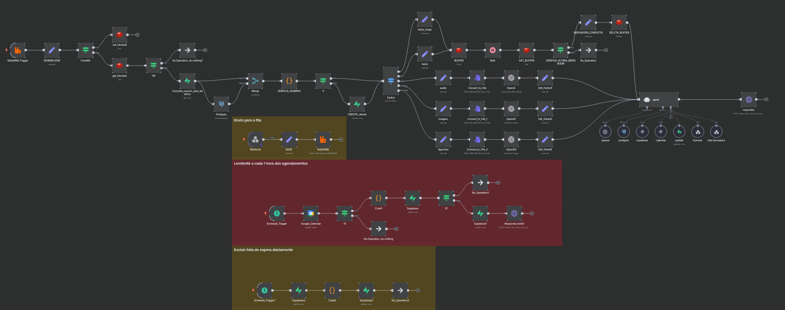
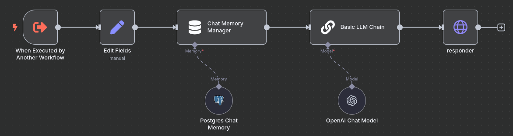

Lucas Hideki Tobaro Barbeiro | Analista de Automação e Integração de Sistemas
Experiência em automação de processos com N8N, integração de APIs, orquestração de fluxos, e soluções com Inteligência Artificial
Principais Tecnologias
N8N
Node.js
Python
PostgreSQL
API REST
OpenAI
Docker
RabbitMQ
Redis
Google Cloud
Assistente Virtual para Atendimento Automatizado

Solução de atendimento via WhatsApp, com inteligência artificial para agendamento, cancelamento e
reagendamento de horários. Operação autônoma com fallback inteligente.
N8N
RabbitMQ
Redis
PostgreSQL
Javascript
Evolution API
OpenAI API
Integração de Documentos para Base de Conhecimento

PDFs internos são processados via Python e Docling, convertidos para Markdown e organizados em um
vetor semântico para consulta via IA. Transformação de conteúdo estático em conhecimento
consultável.
N8N
OpenAI API
Python
Docling
Google Drive
Pinecone
Monitoramento de Instância via API
Script em Python monitora o estado da instância via API REST. Quando o estado é alterado para
"close", uma notificação é automaticamente enviada via Telegram.
Python
Telegram API
Escalonamento Inteligente: Call Human

Quando a IA não consegue resolver uma solicitação, a ferramenta gera um resumo com os últimos
tópicos relevantes da conversa utilizando a OpenAI. Esse resumo é enviado ao atendente humano com os
dados de contato do cliente, garantindo transição fluida e produtiva.
N8N
OpenAI
WhatsApp API
ERP Integration
Email Marketing